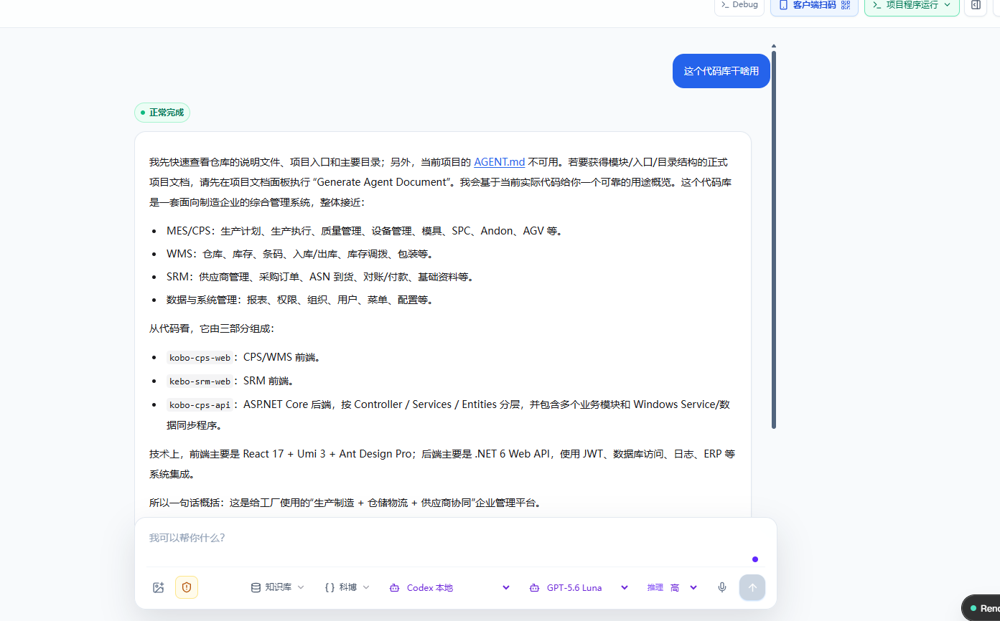
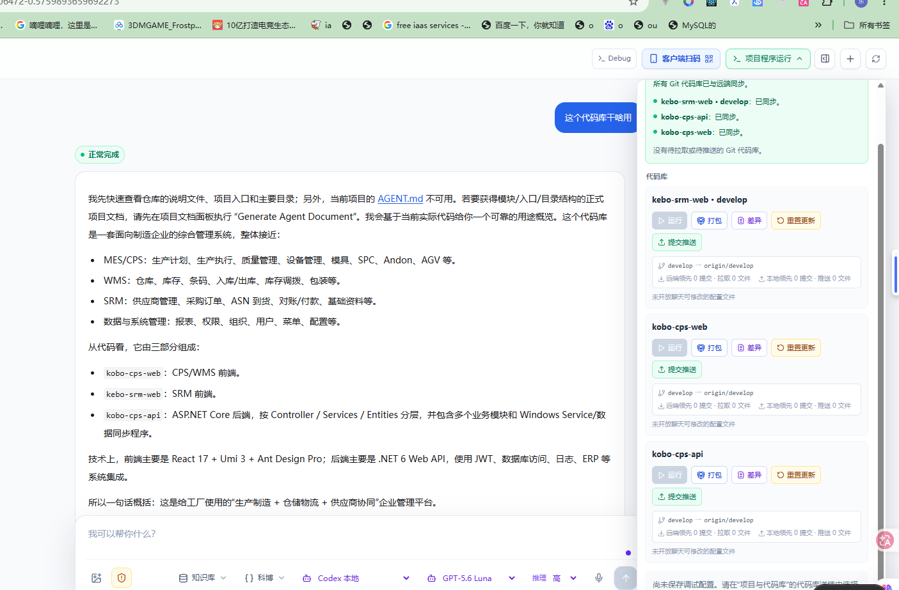

01
培训说明
培训的目标是让团队在正确的项目和权限边界内使用 AI，基于服务器代码、项目资料和 Git 记录形成可复核的结果。
| 模块 | 建议时长 | 学员产出 |
|---|---|---|
| 平台边界与角色 | 15 分钟 | 确认自己的项目与权限。 |
| 登录 项目 上下文 | 35 分钟 | 一次带约束的提问。 |
| 任务画布和协同 | 30 分钟 | 复杂任务的会话拆分。 |
| Git 变更集与交付 | 40 分钟 | 模拟审阅和交付检查。 |
| 知识库与多 Agent | 30 分钟 | 理解建设方向与治理要求。 |
02
课前准备
使用非生产或已授权的练习项目。不得把密码、令牌、连接串、隐私信息或未脱敏生产数据输入聊天或放入附件。
| 角色 | 课前确认 | 培训任务 |
|---|---|---|
| 开发人员 | 项目和仓库可访问。 | 分析代码、评审差异、验证修改。 |
| 交付人员 | 准备需求、复现信息或验收标准。 | 描述业务目标、追问原因、协同验收。 |
| 项目负责人 | 确定练习项目和样例。 | 组织会话、确认范围、安排审批。 |
| 审批人 | 具备代码提交权限。 | 复核变更集，决定是否交付。 |
03
第一次使用
先确认账号、可见项目和代码库，再开始提问。项目决定本次会话可用的知识、文件、任务、模型和交付范围。


跟做清单
04
提问和结果审阅
任务描述应包含目标、现状、限制和验收方式。Bug 需补充症状、时间范围、相关模块、复现条件或日志片段，并要求返回代码与 Git 依据。
| 练习 | 模板 | 检查证据 |
|---|---|---|
| 理解代码 | 说明模块入口、核心调用链和配置文件；不要修改代码。 | 文件路径、关键方法、未知项。 |
| 排查 Bug | 分析现象在指定时间或版本出现的原因，并比较此前差异。 | 提交、差异文件、复现步骤、待验证假设。 |
| 新功能规划 | 列出影响模块、风险、接口和验收条件。 | 引用当前代码和需求，并区分事实与建议。 |


上机练习
05
任务画布和协同
简单任务可在单会话处理；复杂任务应拆为分析、方案、改动、验证等节点。新会话默认不自动运行，避免未确认资料直接触发写入。

| 场景 | 建议拆分 | 交接保留 |
|---|---|---|
| 交付提出需求 | 澄清 → 影响分析 → 实现 → 验证。 | 需求版本、引用文件、验收条件、责任人。 |
| CPS APS 影响分析 | APS 规则 → 接口复核 → CPS 改动 → 联合验证。 | 规则、接口约束、代码版本、结论。 |
| 历史问题回溯 | 现象 → Git 差异 → 假设 → 验证修复。 | 时间点、提交号、日志、验证结果。 |
06
Git 交付演练
AI 可帮助定位和修改，正式交付仍由团队的权限与审批机制控制。

| 步骤 | 操作 | 检查点 |
|---|---|---|
| 确认范围 | 确认项目、仓库、分支和待提交文件。 | 无无关文件，业务说明齐全。 |
| 审阅差异 | 查看 diff、修改说明和验证结果。 | 理解每个文件为何修改。 |
| 创建变更集 | 形成摘要和校验记录，提交审批。 | 内容与工作区一致。 |
| 审批交付 | 复核范围、风险、测试和指纹。 | 审批后变化需重新审批。 |
| 推送留痕 | 获授权者提交并推送。 | 提交信息与远端状态可追溯。 |
练习规则
07
知识库和 CPS APS Agent 协同展望
坤伴 2.0 计划将受控项目的代码、任务、需求文件、会话结论和交付记录沉淀为项目知识资产，CPS Agent 与 APS Agent 在同一权限边界内共享事实。


参考 OpenViking 的资源、记忆和技能统一组织，以及摘要、概览、明细的分层取用思路。坤伴会结合项目权限、Git 交付和部署约束建设自身适配层；培训中不应承诺尚未上线的接口或自动化能力。
08
结课练习和检查
| 练习 | 提交结果 | 讲师检查 |
|---|---|---|
| 项目确认 | 当前项目、仓库和执行模式。 | 范围和权限正确。 |
| Bug 或差异问答 | 含时间或提交范围的提问及引用依据。 | 文件、版本和待验证项完整。 |
| 需求协同 | 会话或画布拆分方案。 | 区分需求资料和代码事实。 |
| 交付审阅 | 文件清单、diff 结论和变更集说明。 | 理解审批与 Git 留痕顺序。 |
我已完成